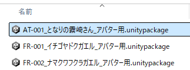
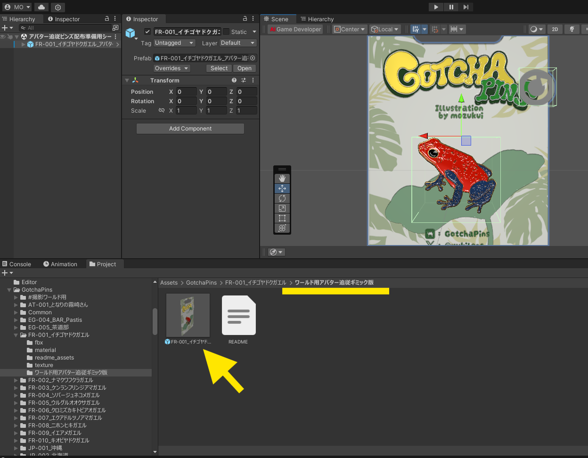
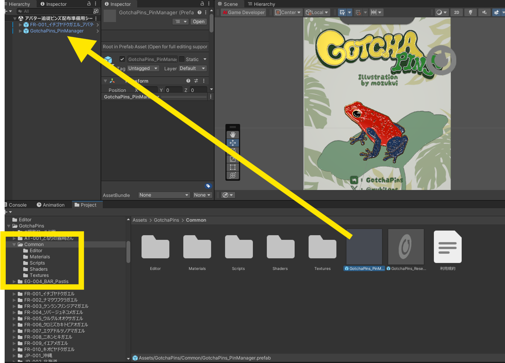
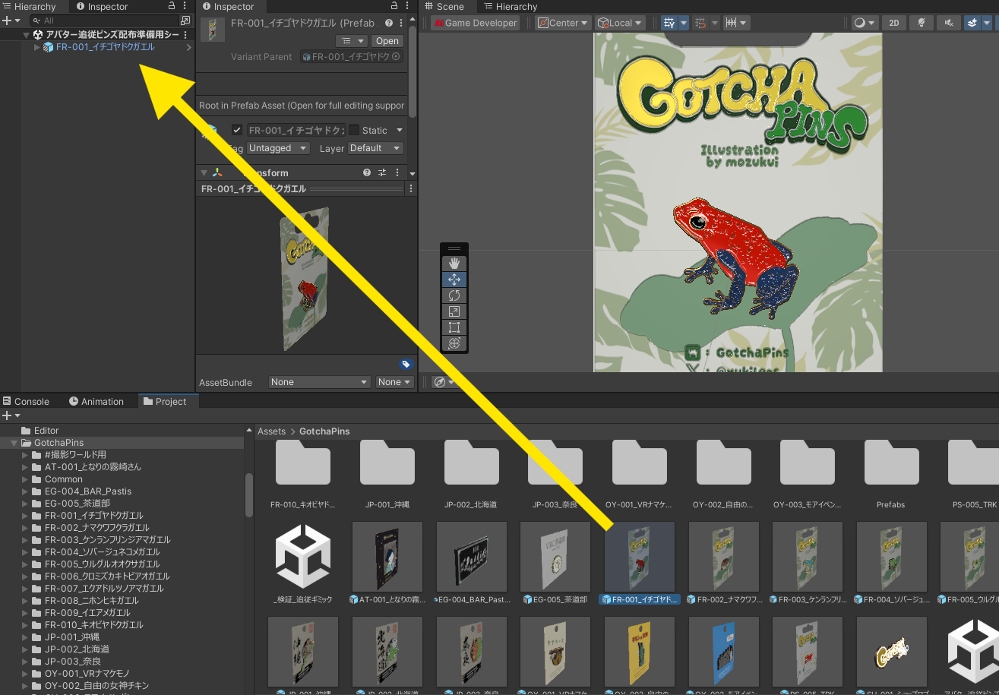
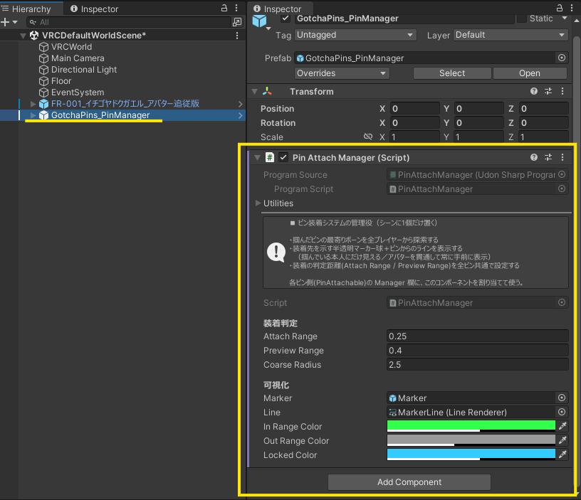

STEP 2 / 5
設置手順（3ステップ）
- unitypackage をインポート
ワールドのプロジェクトを開いた状態で、.unitypackageをダブルクリック →「Import」。
- ピンバッジのセットをシーンに置く
Assets/GotchaPins/(商品名フォルダ)/ワールド用アバター追従ギミック版/の中の 追従版セット Prefab を、シーンの好きな場所にドラッグ＆ドロップ。
※ ディスプレイには最初から台紙が入っています。掴むとピンズ本体だけ外れ、台紙が展示位置に残ります。
- 管理オブジェクトを1個だけ置く ★重要
Assets/GotchaPins/Common/の中のGotchaPins_PinManagerPrefab を、シーンに1個だけドラッグ＆ドロップ。
💡 Managerはピンバッジの追従を動かす「管理役」です。シーンに1個あれば、何個ピンバッジを置いても共有されます。置くだけでシーン内のピンバッジに自動接続されます。
✅ もしManagerを置き忘れたままアップロードしようとすると、ビルド時に「管理オブジェクトが見つかりません。配置しますか？」とポップアップが出ます。「配置する」を選べばその場で自動配置・接続されます。
あとは通常どおりワールドをアップロードすれば完成です。
追従ギミックが不要な場合
アバター追従ギミックが必要なければ、Assets/GotchaPins/ 配下にある 素のPrefab（ギミック無し）をシーンに追加してください。こちらは飾るだけの静的な展示用で、GotchaPins_PinManager の設置も不要です。

Manager のプロパティ
基本は初期値のままでOKです。装着の付きやすさやマーカーの色を調整したい場合だけ、下を開いてください。
⚙ Manager のプロパティ詳細（調整したい人向け・基本は初期値のままでOK）

装着判定
| 項目 | 初期値 | 説明 |
|---|---|---|
| attachRange | 0.25 | 装着が確定する距離（m）。ボーンにこの距離まで近づけて手を離すと装着（マーカーが緑）。小さいほどピッタリ近づけないと付かない／大きいほど大ざっぱでも付く |
| previewRange | 0.4 | 候補マーカーが出始める距離（m）。attachRange〜previewRangeの間はグレー＝離すと装着されずその場にドロップ。必ず attachRange より大きく |
| coarseRadius | 2.5 | 負荷削減用の粗い距離（m）。通常は触らなくてOK（自動で十分な値が確保されます） |
可視化（マーカーの色）
| 項目 | 初期色 | 説明 |
|---|---|---|
| inRangeColor | 緑 | 装着可（ここで離せば付く）を示す色 |
| outRangeColor | グレー | 範囲外（離すと付かずその場ドロップ）を示す色 |
| lockedColor | シアン | ボーン固定中を示す色 |
色はお好みで変えてOKです。
marker / line の欄は配置時に自動設定されるので、触らなくて大丈夫です。